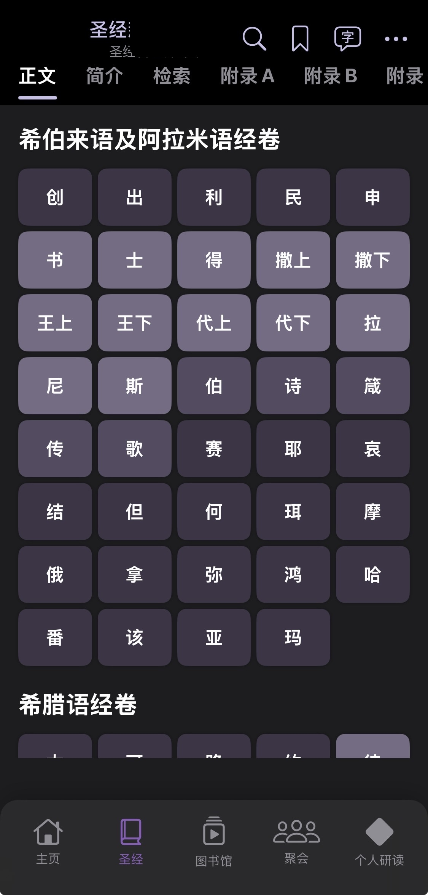
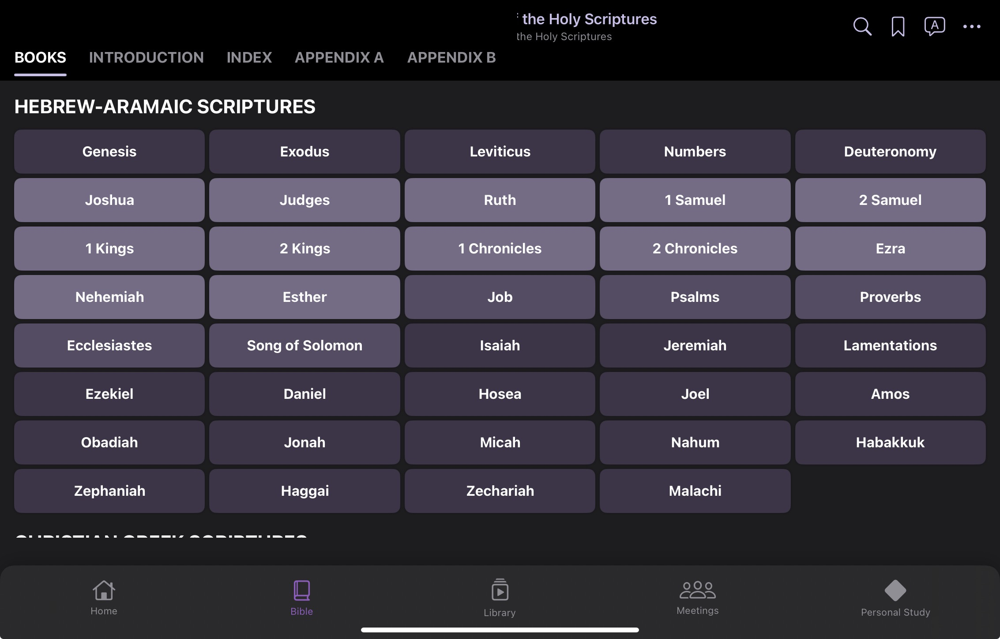
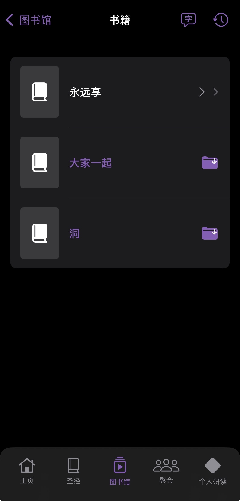
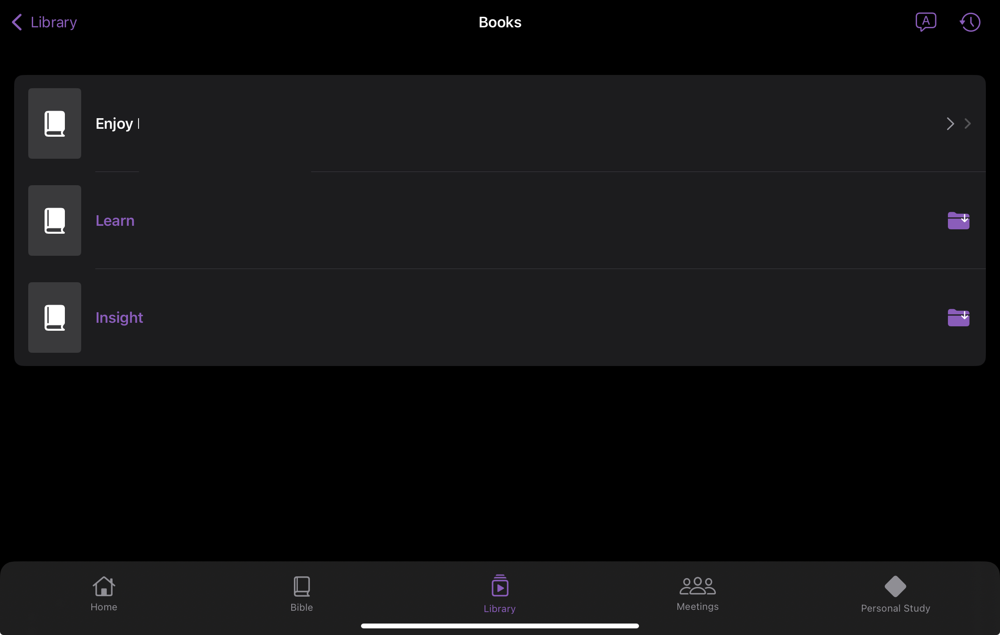
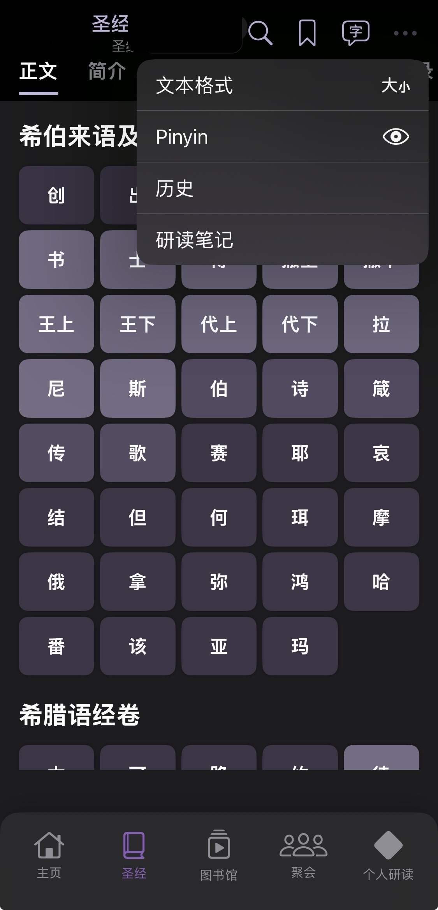
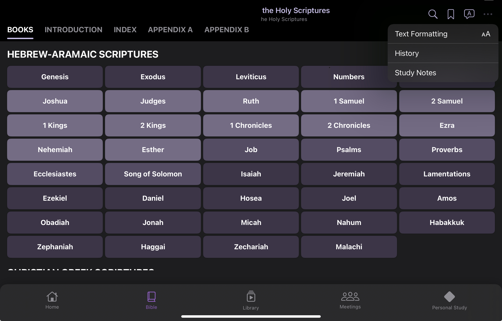
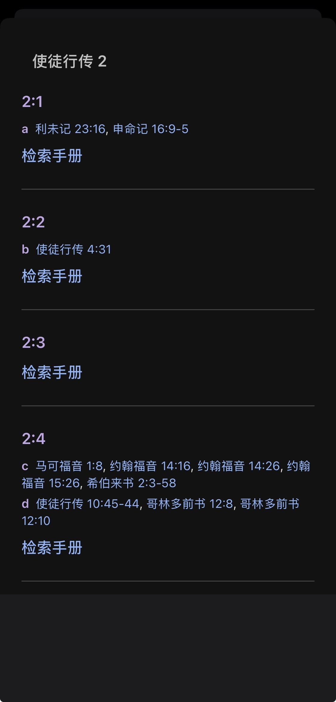
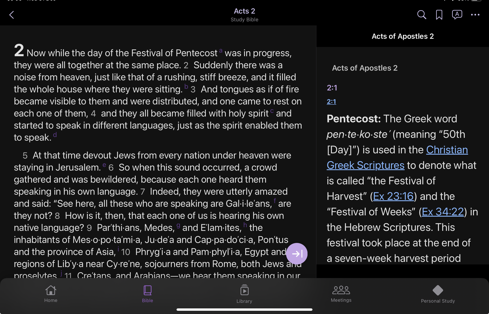
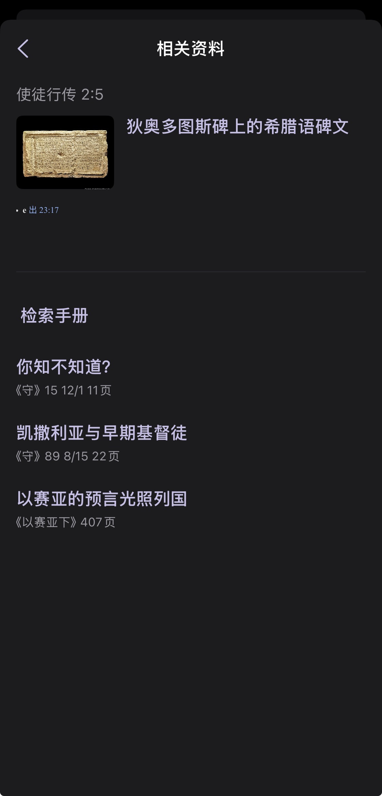
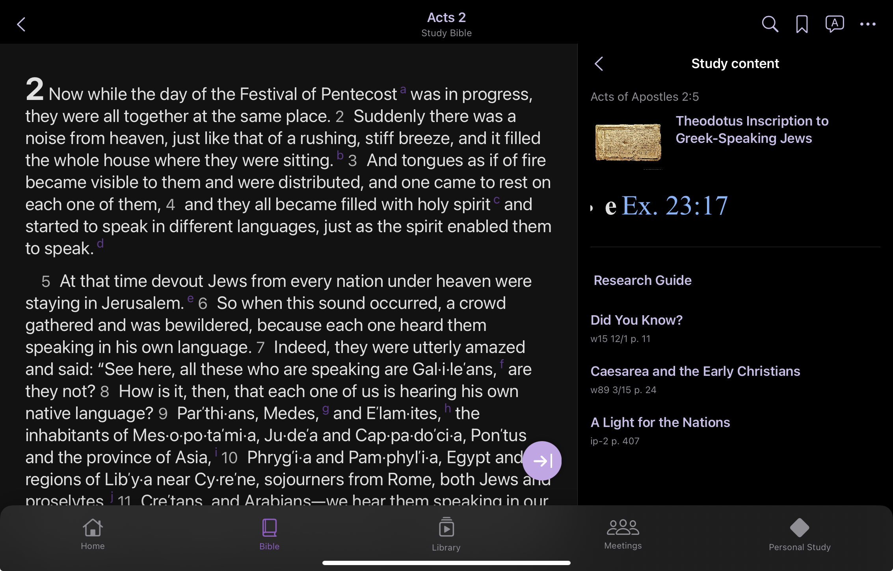

The 520 app is a digital library application designed to help you read, study, and organize your publications. The app is 100% offline, contains no preloaded information, and functions as a reader. To use it, you must first download the files you want to install from the official website, then import them one by one into the app from their corresponding section. You can import books, magazines, Bibles, and other materials to read them anytime, anywhere on your iPhone or iPad.

The Bible view (iPhone)圣经视图 (iPhone)

The Bible view (iPad)圣经视图 (iPad)
Understanding the Main Screen
了解主屏幕
The Home screen shows:
主屏幕显示：
Daily Text: Today\'s text from the calendar. Note: You need to import the "es" (daily text) file corresponding to the current year from the official website for the daily text to appear.
Done! Your publication will appear in the Library.
完成！您的出版物将出现在图书馆中。

Publication appears in Library (iPhone)出版物出现在图书馆中 (iPhone)

Publication appears in Library (iPad)出版物出现在图书馆中 (iPad)
What to Do If the File Doesn't Appear
如果文件未出现该怎么办
File not showing? Try these solutions:
文件未显示？尝试以下解决方案：
Make sure the file is in EPUB or J*PUB format
Check that the file isn't corrupted
Try importing again
Restart the app if needed
确保文件是 EPUB 或 J*PUB 格式
检查文件是否损坏
尝试重新导入
如需要，重启应用
Supported File Formats
支持的文件格式
EPUB and J*PUB
EPUB 和 J*PUB
Reading a Publication
阅读出版物
Opening Publications from Different Sections
从不同部分打开出版物
From Library Tab:
从图书馆标签：
Tap the Library tab
Find your publication in the list
Tap on it to open
点击图书馆标签
在列表中找到您的出版物
点击打开
From Bible Tab:
从圣经标签：
Tap the Bible tab
Select NWT or NWTSTY
Choose a book from the grid
Select a chapter
点击圣经标签
选择 NWT 或 NWTSTY
从网格中选择一本书
选择一个章节
Navigating Pages
翻页
Swipe left: Go to next page
Swipe right: Go to previous page
Tap page edges: Navigate forward/backward
向左滑动: 转到下一页
向右滑动: 转到上一页
点击页面边缘: 向前/向后导航
iPad: On iPad, you can use split-screen view to read while taking notes.
iPad: 在 iPad 上，您可以使用分屏视图边阅读边做笔记。
Adjusting Font Size
调整字体大小
While reading, tap the right corner icon (aA)
Tap "Font Size" or the font icon
Use the slider to increase or decrease size
Tap outside to close
阅读时，点击右上角图标（aA）
点击"字体大小"或字体图标
使用滑块增大或减小字体
点击外部关闭

Adjusting font size (iPhone)调整字体大小 (iPhone)

Adjusting font size (iPad)调整字体大小 (iPad)
Additional Features
其他功能
Highlights and Notes
标记和笔记
Adding Highlights:
添加标记：
Select text by long-pressing
Choose a highlight color
The text will be highlighted
长按选择文本
选择标记颜色
文本将被标记
Adding Notes:
添加笔记：
Highlight text and tap on the highlighted text and tap the note icon
Type your note
Save it
Access notes from the Personal Study tab
标记文本，点击标记的文本，然后点击笔记图标
输入您的笔记
保存
从个人学习标签访问笔记
Search Function
搜索功能
Tap the search icon (🔍) in the toolbar
Type your search term
Results will show matching publications and pages
Tap a result to go to that location
点击工具栏中的搜索图标（🔍）
输入您的搜索词
结果将显示匹配的出版物和页面
点击结果转到该位置
Bible Study Features
圣经学习功能
Important: To start using the study features for NWT, you must first install the study version NWTSTY and the Research Guide (RSG), both previously downloaded from the official website.
There are two ways to access study materials in a Bible chapter:
有两种方式可以访问圣经章节中的学习材料：
1. Diamond Icon (💎) - Chapter View
1. 钻石图标（💎）- 章节视图
Tap the diamond (💎) icon in a chapter
Opens the complete study material view for the entire chapter
Shows all study references divided verse by verse
You can browse through all verses in the chapter and their study materials
在章节中点击钻石（💎）图标
打开整个章节的完整学习材料视图
显示按节划分的所有学习参考资料
您可以浏览章节中的所有经文及其学习材料

Diamond icon opens complete chapter study materials (iPhone)钻石图标打开完整的章节学习材料 (iPhone)

Diamond icon opens complete chapter study materials (iPad)钻石图标打开完整的章节学习材料 (iPad)
2. Verse Number - Single Verse View
2. 经文编号 - 单节视图
Tap the verse number (e.g., "1", "2", "3") next to a specific verse
Opens the study material view for that specific verse only
Shows study references, notes, and research guide articles for just that verse
More focused view for studying a single verse in detail
点击特定经文旁边的经文编号（例如"1"、"2"、"3"）
打开仅该节的学习材料视图
显示仅该节的学习参考资料、笔记和研究指南文章
更专注的视图，用于详细研究单节经文

Verse number opens study materials for that specific verse (iPhone)经文编号打开该特定节的学习材料 (iPhone)

Verse number opens study materials for that specific verse (iPad)经文编号打开该特定节的学习材料 (iPad)
Key Difference:
Diamond icon: Complete chapter view with all verses and their study materials
Verse number: Focused view for a single verse's study materials
主要区别：
钻石图标： 包含所有经文及其学习材料的完整章节视图
经文编号： 专注于单节经文学习材料的视图
iPad: On iPad, bible references and study notes open in a side panel.
iPad: 在 iPad 上，圣经引用和学习笔记在侧边面板中打开。
Audio Bible
音频圣经
Important: Before using the audio Bible, you must first go to the Library/Audio section and import the MP3 files previously downloaded from the official website corresponding to the NWT books.